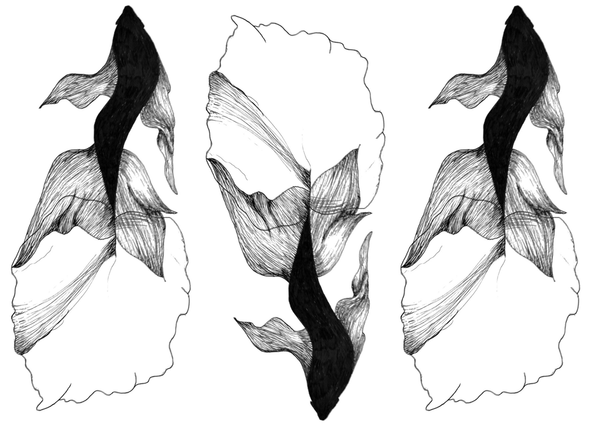
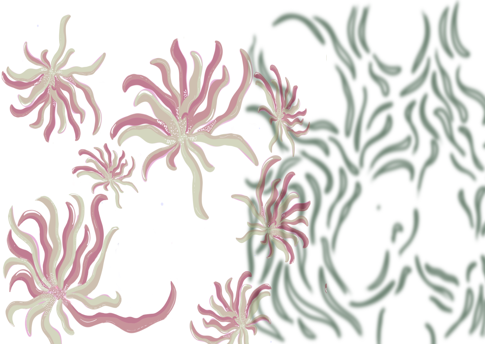
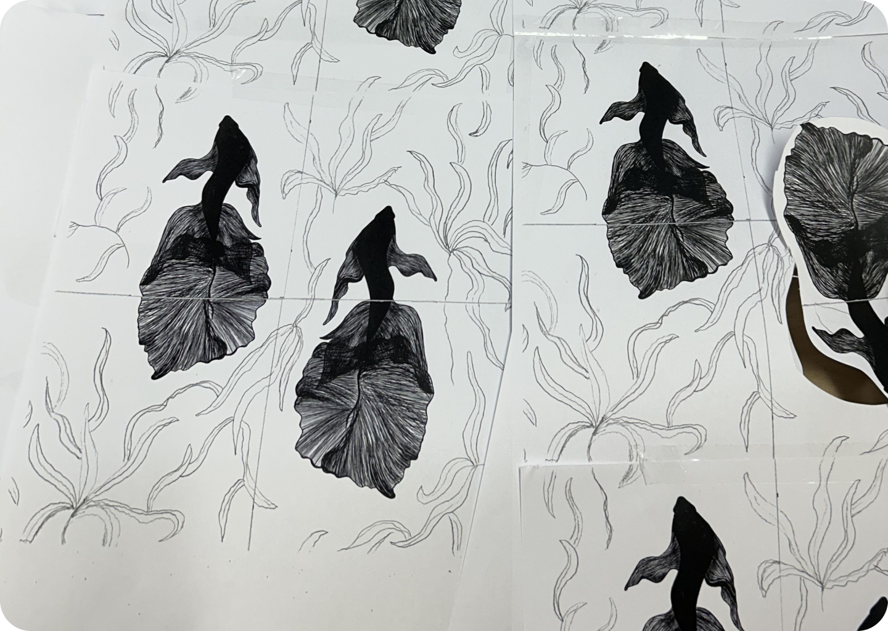
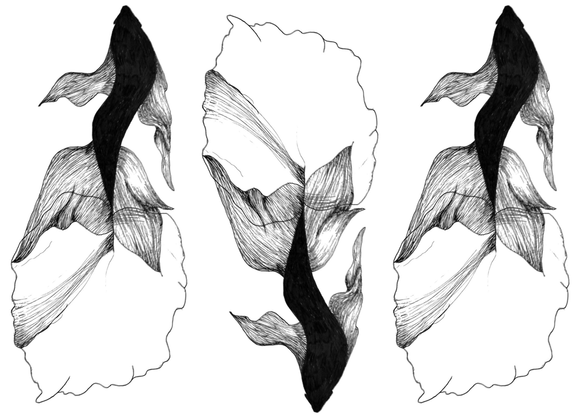
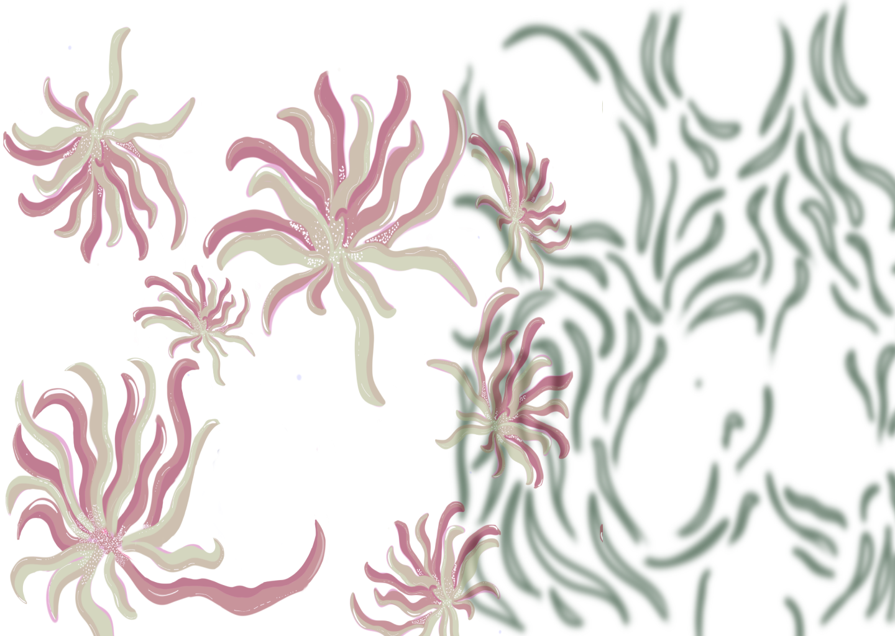
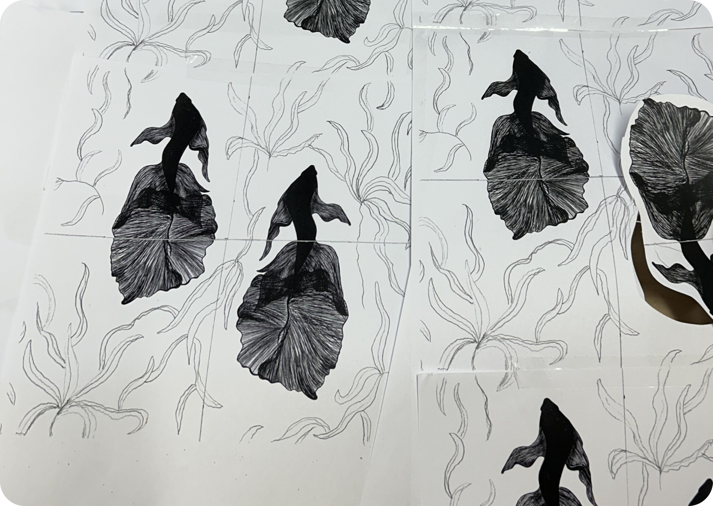

Pattern Collection
 





Project Overview
This project involves creating a unique pattern collection that can be used in various design contexts. The focus was on integrating traditional elements with modern design aesthetics.
Key Features:
- Innovative use of color and texture
- Versatile applications in home decor
- Eco-friendly design considerations
Technologies Used:
Adobe Illustrator, Procreate, Figma